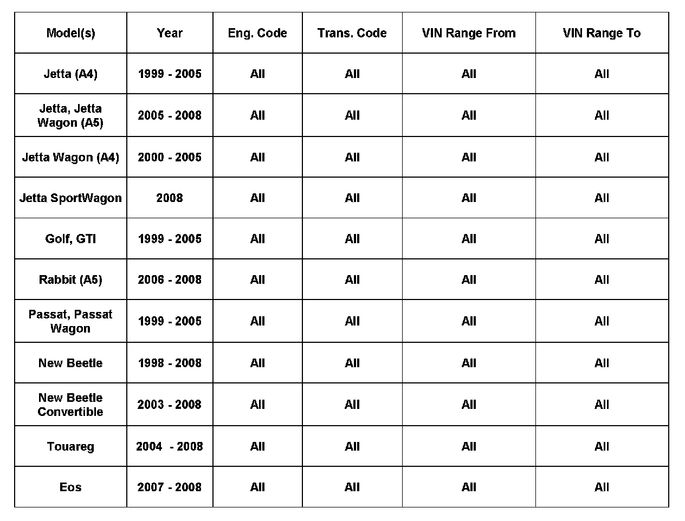
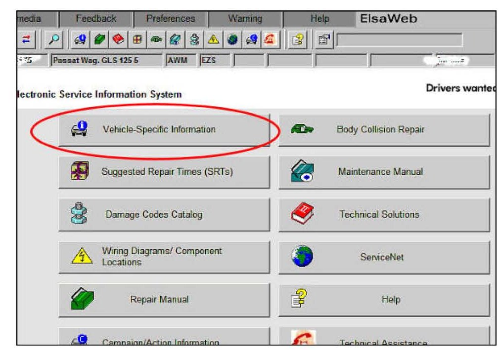
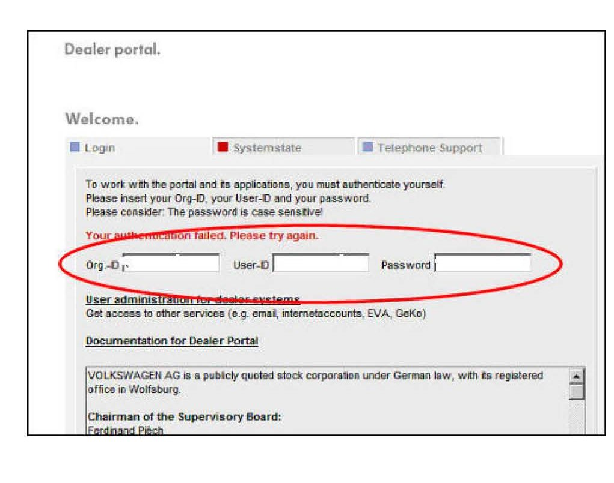
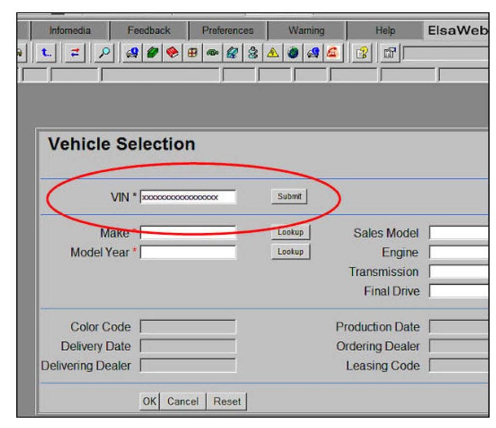
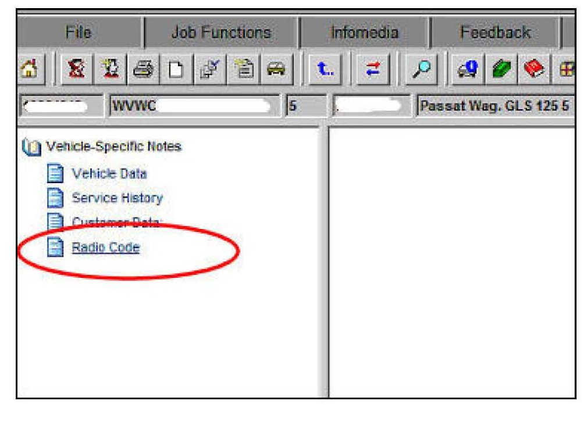
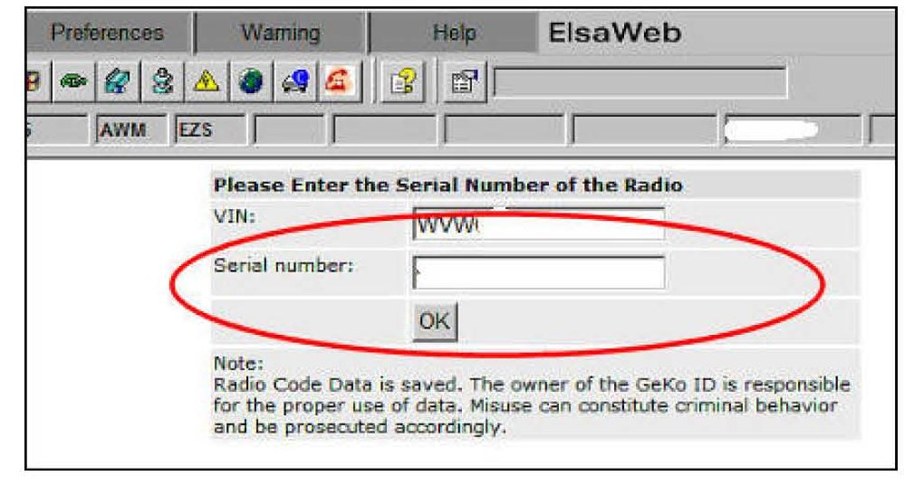
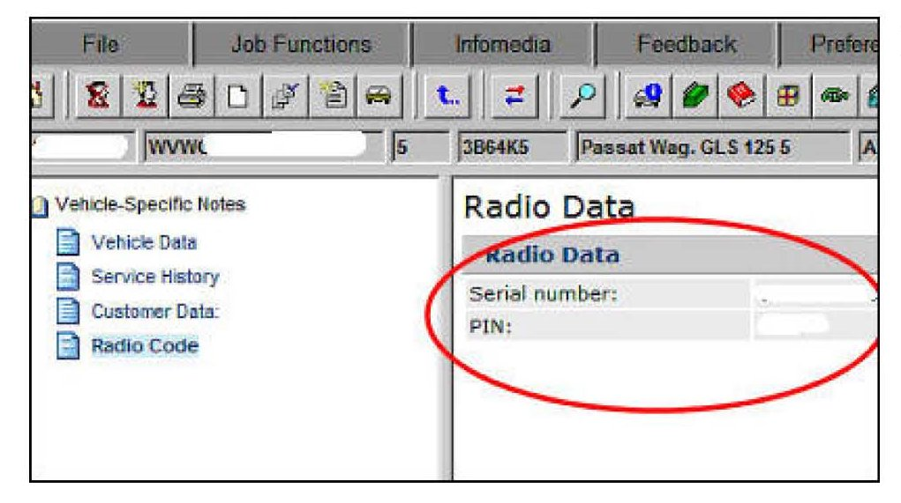
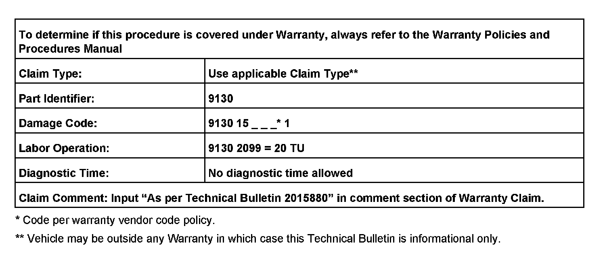
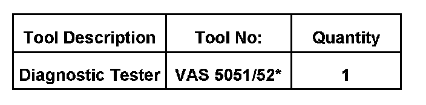

Audio System - Antitheft Code Retrieval/Entering
91 07 13September 4, 2007
2015880

Vehicle Information
Condition
Radio, Entering and Retrieving Anti-Theft (SAFE) Code for Non PDI Vehicles
Anti-theft code needs to be entered into the radio to enable functionality.
Technical Background
The radio requires anti-theft code to be entered in the following scenarios:
^ New vehicle delivery (see bulletin labeled "PDI - Radio, Anti-Theft Radio Security Code Not Equipped")
^ New (replacement) radio installed into a vehicle or radio is installed into a different vehicle
^ Radio is electronically locked (SAFE appears in display) after the incorrect code has been entered twice
Production Solution
Not applicable.
Service
Anti-theft code retrieval for NON PDI vehicles
Tip:
The radio anti-theft code can only be retrieved through the VAS diagnostic tester or through ElsaWeb. An active online connection and valid GeKo ID are required.
Vehicles with Gateway:
^ Retrieve anti-theft code in the tester by selecting and completing the following test plan: GF >> 56
Radio/Navigation >> 56 - Anti-theft - coding inquiry
VWZ number and VIN number will automatically be read out and anti-theft code will be retrieved from the online servers. Anti-theft code must then be entered into radio as described in Anti-theft Code Entry procedure below.
Vehicles without Gateway:
^ In Guided Functions select vehicle type then 56 - Radio >> Displaying measuring value blocks. Then read out and record VIN and Radio WWZ serial number (14 digits) from MVB 81
^ Retrieve anti-theft code in tester by selecting and completing the following test function in GF: 56 - Radio >> Radio code - inquiry and system test >> Radio code, checking
VWZ number and VIN number must be entered into tester and anti-theft code will be retrieved from the online servers and must be entered into radio as described in Anti-theft Code Entry procedure below.
Generating Radio Codes using ElsaWeb:

Select Vehicle-Specific Information.

Enter Dealer Portal password

Enter vehicle VIN number then submit

Select Radio Code

Enter radio serial number. Located in radio MVB 81 or on
radio chassis

Radio PIN number will be generated
Anti-theft Code Entry
Code 1000 is displayed in radio by default. Digits can be changed by pressing corresponding soft keys on radio. Procedures for radio models differ, please refer to owners manual or ElsaWeb for instructions on entering radio pin.
If correct anti-theft code has been entered, display will change to a FM frequency and the radio can be used. If incorrect code is entered, SAFE is briefly seen in the display changing to 1000 again and one additional attempt to enter correct code is possible.
Unlocking a Locked Radio (SAFE is Displayed)
The radio becomes electronically locked after two incorrect code entries. To unlock radio so that correct anti-theft code can be entered, radio must remain powered on for a specified time. Use the following procedure to do this.
1. Connect a battery charger to the vehicle.
2. Switch ignition and radio ON for approximately one hour.
After remaining on for one hour the radio display will change and the anti-theft code can again be entered. Refer to Anti-theft code entry to complete code entry.

Warranty
NOTE:
Procedure can only be claimed with a warranty repair to the vehicles electrical system when required.

Required Parts and Tools
No Special Parts required
Additional Information
All part and service references provided in this Technical Bulletin are subject to change and/or removal.
Always check with your Parts Dept. and Repair Manuals for the latest information.